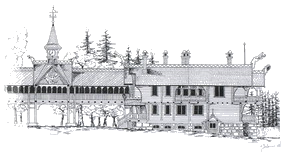
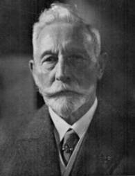
24 сентября 2005 года в Центральном парке Калининграда в здании областного театра кукол открылась выставка, посвящённая двум историческим зданиям: охотничьему дому кайзера Вильгельма II и кирхе памяти королевы Луизы, которые волею судьбы оказались рядом в одном из красивейших мест города Калининграда.
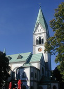
Калининрадский областной театр кукол (кирха королевы Луизы)
Кайзер Вильгельм II (1859-1941гг.) немецкий кайзер и король Пруссии, правнук королевы Луизы.
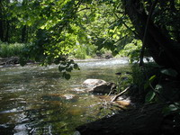
Река Красная (Роминте)
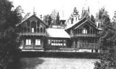
Королевский охотничий дом, флигель кайзера, начало XX в.
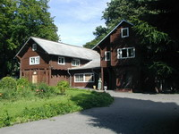
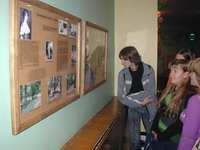
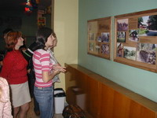
Здесь, в Центральном парке, в бывшем Луизенвале, когда-то с детьми гуляла королева Луиза, здесь, на высоком берегу ручья, было одно из любимых её мест, здесь почти через двести лет в 1901году благодарные жители Пруссии построили кирху в память о своей королеве. И сюда, на берег того самого ручья, после Второй мировой войны была превезена часть королевского охотничьего дома, построенного правнуком королевы королём Пруссии Вильгельмом II. Дом этот был знаменит, великолепен. Возведённый из скандинавского леса в стиле норвежского блокхауза, он стоял на другом берегу - на берегу живописной реки Роминте в пуще Роминтер Хайде - удивительном, сказочном месте вблизи Виштынецкого озера.
Здесь, в парке, в центе Калининграда, кирха Луизы и охотничий дом короля указателями стоят на прекрёстке нашей памяти, объединяющей времена, поколения, земли. Каждый из них избежал полной гибели в годы Второй мировой войны, каджый был спасённый своей красотой, тронувшей души людей. Той самой красотой и творчеством, рождёнными любовью короля к девственной природе Виштынца, признательностью своей королеве, влюблённой в Луизенваль, в Пруссию.
И, стоя на перекрёстке памяти времён, между кирхой Луизы и охотничьим домом, попробуем понять, почувствовать историю этой земли - нашей Родины, ведь без прошлого нет будущего.
Здесь, в парке, в центе Калининграда, кирха Луизы и охотничий дом короля указателями стоят на прекрёстке нашей памяти, объединяющей времена, поколения, земли. Каждый из них избежал полной гибели в годы Второй мировой войны, каджый был спасённый своей красотой, тронувшей души людей. Той самой красотой и творчеством, рождёнными любовью короля к девственной природе Виштынца, признательностью своей королеве, влюблённой в Луизенваль, в Пруссию.
И, стоя на перекрёстке памяти времён, между кирхой Луизы и охотничьим домом, попробуем понять, почувствовать историю этой земли - нашей Родины, ведь без прошлого нет будущего.
Королева Луиза
(1776-1810 г.г.) - прусская королева, супруга Фридриха-Вильгельма III
(1776-1810 г.г.) - прусская королева, супруга Фридриха-Вильгельма III
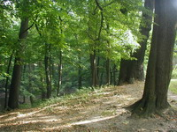
Парк Центральный (Луизенваль), вид с высокого берега ручья
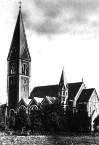
Кирха памяти Луизы,
фото начала XX века
фото начала XX века
Часть королевского охотничьего дома, перенесённого из пущи Роминтер Хайде в Калининград в 1948 году
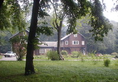
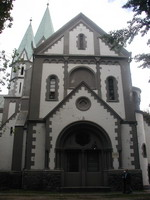
Выставку можно посетить в субботу и воскресенье
с 11 до13 часов
по адресу:
г. Калининград, парк Центральный, областной театр кукол.
с 11 до13 часов
по адресу:
г. Калининград, парк Центральный, областной театр кукол.
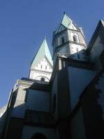
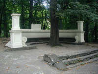
Ротонда королевы Луизы в парке Центральном (Луизенваль)
Флигель кайзера охотничьего дома в Центральном парке Калининграда
Кирха памяти королевы Луизы ( Калининрадский областной театр кукол) 2005 г.